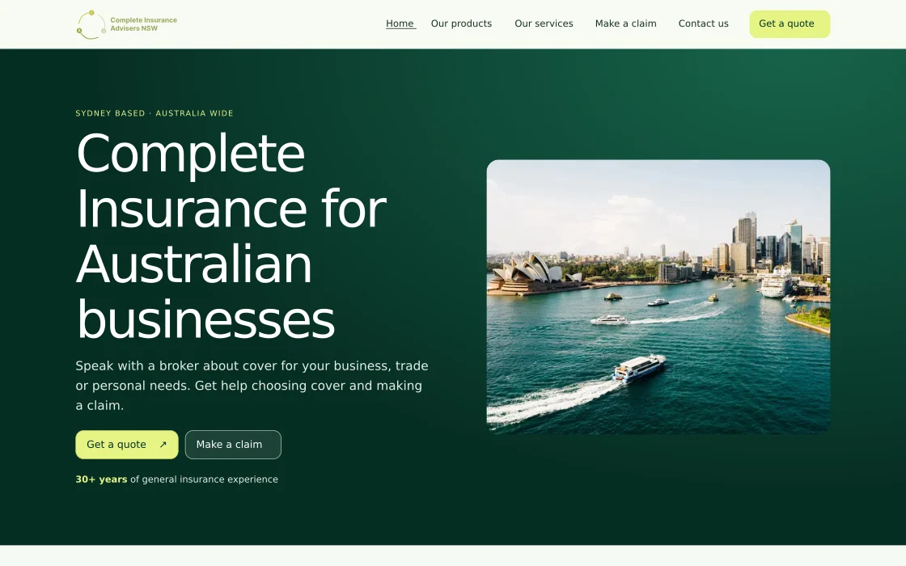

01 / Portfolio
Selected work
Six case studies spanning two versions of the CIANSW brokerage website and four projects for NRMA home insurance.

CIANSW website redesign
How I made it easier to find cover, ask for a quote and get claims help.

Quote & Buy Reimagine
A shorter path to a home insurance quote.

Sum Insured Optimisation
Making the next step clearer after a rebuild estimate.

Quote Flow Redesign
Helping customers compare the price and value of cover.

Sum Insured Discovery
Testing what homeowners understood about rebuild costs.

Complete Insurance Advisors
Designing and building a clearer way to find brokerage services and claims support.